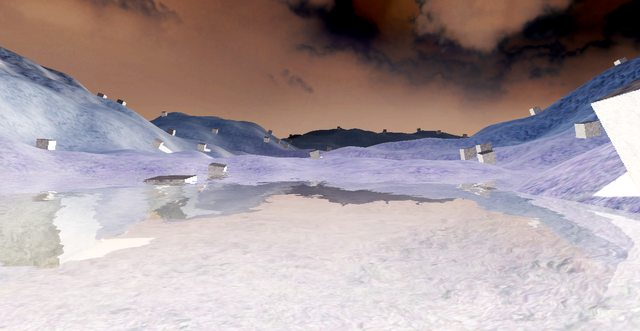

rasteron
That effect you use for horror, shocking sequences and nightmare stuff…


[gist]
https://gist.github.com/d9b228b10722cb26401f[/gist]
[gist]
https://gist.github.com/fbe28211759541af6657[/gist]